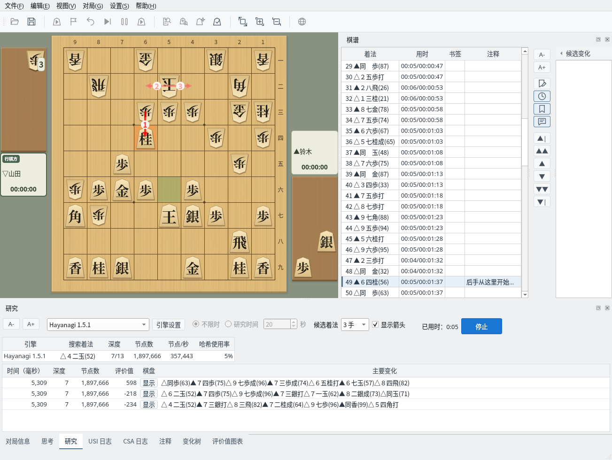
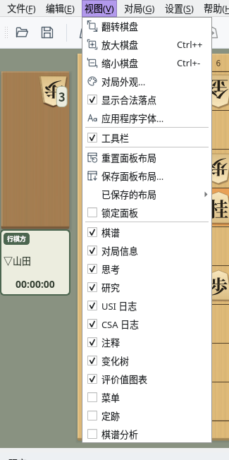
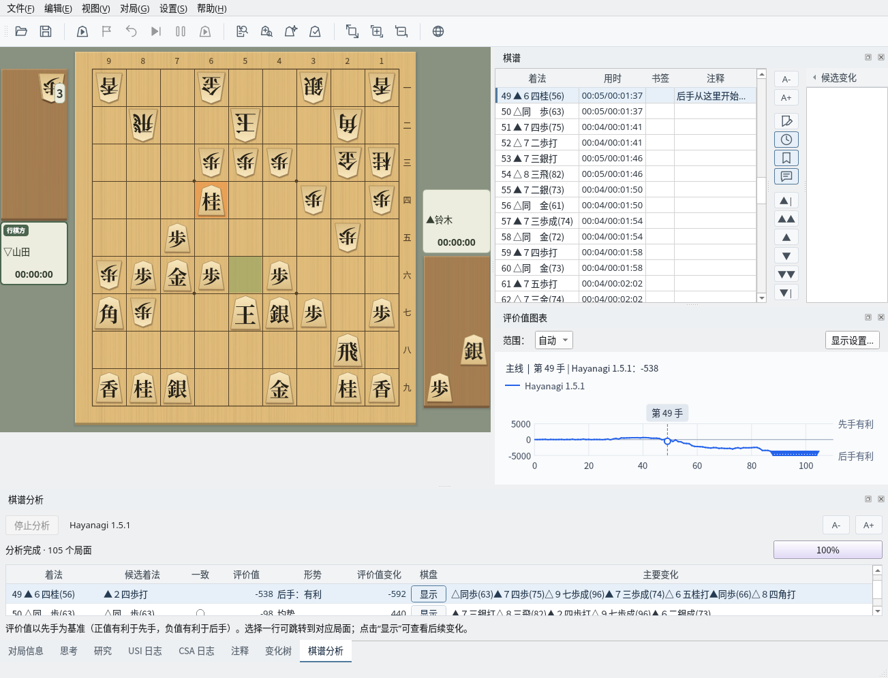
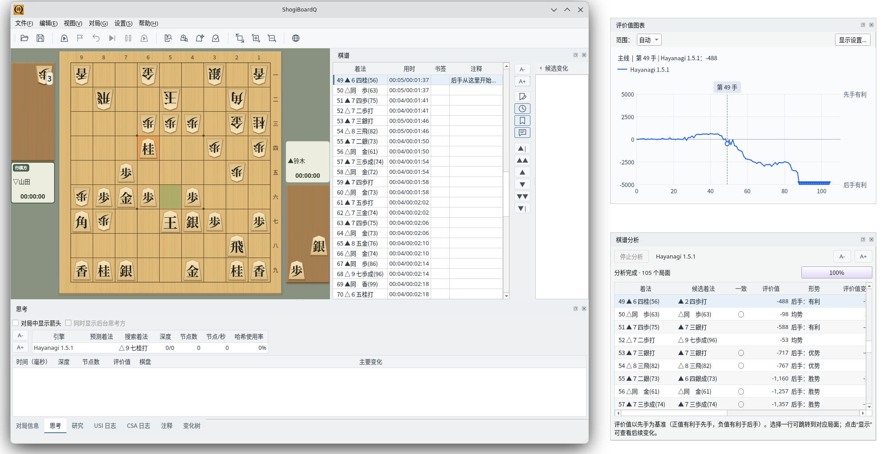
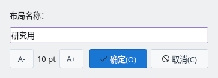
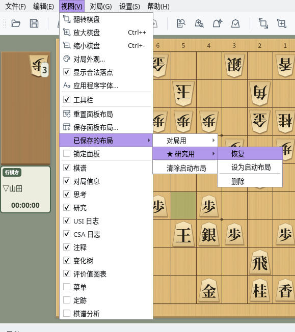

自由排列面板，定制主窗口
截图在 Linux 上以简体中文界面拍摄。
主窗口中的棋谱、思考等都是可停靠的面板
棋盘右侧是“棋谱”，下方以标签页排列“对局信息”“思考”“研究”“USI 日志”“CSA 日志”“注释”“变化树”“评价值图表”。点击标签页即可切换显示的面板。
“菜单”和“定跡”一开始不显示。“棋谱分析”在开始分析棋谱时显示。

默认布局：右侧为棋谱，下方为思考、研究等标签页（研究中的画面）
“视图”菜单下部列出了各个面板，勾选即显示，取消勾选即隐藏。也可以点击面板标题栏右端的 × 关闭。关闭的面板可以从“视图”菜单重新显示。

“视图”菜单：勾选或取消勾选以显示或隐藏面板
拖动面板，移到其他位置或独立的窗口
拖动面板的标题栏，可以把面板移到主窗口的上下左右边缘。放到其他面板上时，两者会合并为标签页。拖动面板之间的边界可以调整大小。

布局示例：把评价值图表移到棋谱下方，下方显示棋谱分析的结果
把标题栏拖到主窗口之外，或双击标题栏（或点击标题栏右端的 ⧉），面板就会成为独立的窗口。再次双击即可放回主窗口。
使用多台显示器时，可以把评价值图表或棋谱分析放到另一台显示器上，以更大的面积显示。

浮动：评价值图表与棋谱分析成为独立窗口的示例
为常用的布局命名保存，随时调用
选择“视图”→“保存面板布局…”，输入布局名称后保存。已有同名布局时，会确认是否覆盖。

保存面板布局：输入布局名称
“视图”→“已保存的布局”中列出已保存的名称，每个布局都可以选择“恢复”“设为启动布局”“删除”。启动布局带有 ★，下次启动时使用该布局。选择“清除启动布局”后，将以默认布局启动。
未设置启动布局时，主窗口内的布局在下次启动时恢复为默认。“棋谱”“评价值图表”“菜单”“定跡”“棋谱分析”的显示状态和作为独立窗口时的位置会保留。

已保存的布局：★ 表示启动布局；每个布局都可以恢复或删除
勾选“视图”→“锁定面板”后，面板不能移动或浮动，可以防止误拖动打乱布局。面板仍可显示或隐藏。
选择“视图”→“重置面板布局”，包括浮动的面板在内，所有面板都会恢复为默认布局。